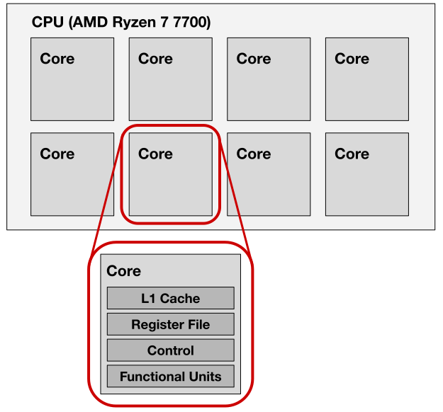
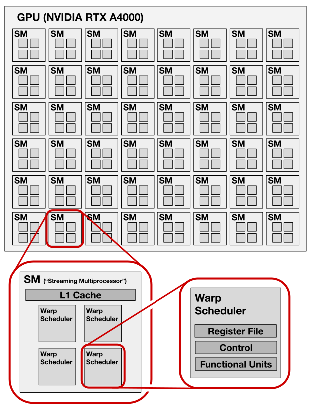
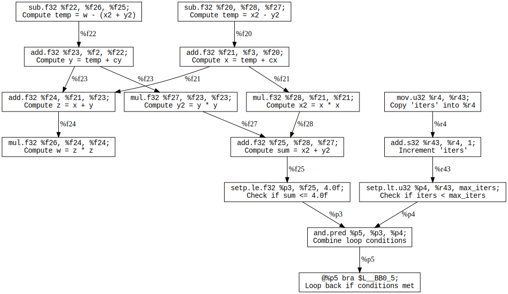

Lab 2: Massively-Parallel Mandelbrot
Prologue: Logistics
Due Dates
For this lab, you’ll be turning in the following deliverables:
-
Checkpoint: Due Monday, September 16, 11:59pm
-
Final Submission: Due Saturday, September 21, 11:59pm
(due on Saturday to accomodate the student holiday on Friday)
See the “Deliverables” section at the end of this document for more information on what you’ll be turning in.
Starter Code
You can get the starter code for this lab by cloning the lab repository:
Changes to Starter Code vs Lab 1
For Lab 2, you should be aware that we’ve made a few changes to the reference implementation of the Mandelbrot algorithm in the starter code, relative to what was in the starter code for Lab 1.
First of all, because of on one of the issues we discussed in last week’s live lab, the line float y = w - x2 - y2 + cy; is now float y = w - (x2 + y2) + cy;. This may seem like a trivial change, but it speeds up the algorithm by allowing the compiler to reuse the expression x2 + y2 computed in the loop condition, and also slightly alters the algorithm’s output due to the (maddening) non-associativity of floating-point math.
Additionally, we’ve adjusted the parameters of the Mandelbrot image we’re generating to be more ambitious. The image is now:
-
Higher resolution.
-
Higher quality. (More iterations per pixel)
-
Zoomed in on a more interesting part of the Mandelbrot set.
(Check out the images in./telerun-outto see what it looks like!)
To control what part of the Mandelbrot set we’re zoomed in to, we’ve added three new constant definitions in the starter code: window_zoom, window_x, and window_y. If you copy any code you wrote for Lab 1 for use in this lab, you’ll need to adjust it to refer to these new constants instead of using the hard-coded window parameters we used in Lab 1.
Introduction
Goals for This Lab
In Lab 1, we looked at ways of using vector parallelism to accelerate an algorithm for rendering the Mandelbrot fractal. We also promised that later we would look at ways to add more levels of parallelism. The time has come!
In this lab, we’ll be starting from our vector-parallel Mandelbrot implementation and adding three new kinds of parallelism:
-
Instruction-Level Parallelism: parallelizing execution of different instructions within a single instruction stream.
-
Multi-Core Parallelism: parallelizing across multiple physical cores, each running its own instruction stream.
-
Multi-Threaded Parallelism: parallelizing execution of multiple instruction streams within a single physical core.
Just like we did in Lab 1, throughout this lab we’ll be focusing on the correspondences between the different levels of parallelism which exist in CPUs and GPUs. As we’ll see, the analogies between CPU and GPU hardware remain quite close even as we scale up our programs to start exploiting instruction-level, multi-core, and multi-threaded parallelism.
In this lab, we’ll also finally start to see our GPU programs overtaking our CPU programs in performance, as we write programs which are able to use the GPU to its full potential.
A Note on Terminology: What is a “Thread?” (And What is a “Warp?”)
Before we get into the details of the lab, we want to clarify some terminology which can become overloaded and confusing when talking about GPUs.
As you might have guessed from the name of the special variable threadIdx.x in Lab 1, NVIDIA uses the word “thread” to refer to a single instance of the program defined by your kernel. But because the GPU executes all instructions in a SIMD fashion across 32 instances of your program at a time, what NVIDIA refers to as a “thread” is much closer to what we’d refer to as a vector lane on a CPU.
By contrast, NVIDIA uses the term “warp” to refer to what we’d traditionally call a “thread”: a single stream of instructions which logically executes sequentially, and that instruction stream’s associated state (registers, etc.). Note that because all instructions executed on an NVIDIA GPU are executed in 32-wide SIMD fashion, a “warp” consists of 32 of the things-NVIDIA-calls-“threads”.
For the purposes of this course, we will try to always explicitly use the term “CUDA thread” when referring to the things NVIDIA calls threads, and we encourage you to do the same during live lab, in write-ups, on Piazza, etc.
When we talk about “threads” generically, as in the phrase “multi-threading,” you should understand that in the context of GPUs we’re referring to the thing that NVIDIA calls “warps.”
We can summarize the situation in the following table of correspondences:
| GPU Concept | CPU Concept |
|---|---|
| CUDA Thread | Vector Lane |
| Warp | Thread |
Background: A Closer Look at the Hardware
Before we start extending our code, it will be useful to have a clear mental picture of what hardware resources are available on the machines we’re programming.
The CPU
The CPU we’re using for this lab is an AMD Ryzen 7 7700. This CPU is clocked at 3.8 GHz and consists of 8 cores, each of which can execute its own independent stream of scalar and vector instructions. The scalar and vector programs we wrote in Lab 1 made use of only a single one of these cores, and ignored the other 7.
Each core has its own register file for storing thread state, its own control logic, and its own functional units like ALUs and FPUs. Although it’s not too relevant for the compute-dominated workload we’re studying in this lab, each core also has its own L1 cache.
Each core on this CPU supports simultaneous multi-threading (SMT) with at most 2 concurrent threads of execution, with each thread having its own program counter and register state. When different instructions from these threads require the use of different hardware resources, they are able to execute in parallel; when they contend for the same shared hardware resources, they are forced to execute in sequence.
We show a schematic view of the CPU below:

The GPU
The GPU we’re using for this lab is an NVIDIA RTX A4000, clocked at 1.56 GHz. Unlike the CPU, which consists of a flat array of cores, the processing elements on our GPU are organized into a two-level hierarchy. In NVIDIA’s terminology:
-
The GPU consists of 48 streaming multiprocessors (SMs).
-
Each SM consists of 4 warp schedulers. 1
For our purposes, we can regard each individual warp scheduler as analogous to a CPU core. Just like a CPU core, each warp scheduler can execute its own independent stream of vector instructions, and has its own register file, control logic, and functional units. In this lab, we’ll use the word “core” generically to refer to both CPU cores and to warp schedulers.
If a warp scheduler is analogous to a CPU core, you may be wondering about the significance of the “SM” level of the hierarchy – why not just think of the GPU as a flat array of 192 warp schedulers? The answer lies in the memory system: the L1 cache, as well as some other memory resources, are shared at the level of an SM. The fact that the L1 cache is shared won’t be directly relevant for this lab, but it may be helpful for understanding why the concept of an “SM” exists at all.
Similar to the cores on our CPU, each warp scheduler can manage multiple concurrent warps at a time. Specifically, each warp scheduler on our GPU supports fine-grained temporal multi-threading between at most 12 concurrent warps. The warp scheduler can issue an instruction for at most one warp per cycle, and multi-cycle instructions from different warps can execute in parallel with each other as long as they don’t contend for the same shared hardware resources.
Just like on the CPU, the scalar and vector GPU programs we wrote in Lab 1 made use of only a single warp scheduler, and ignored the other 191 (!) warp schedulers on the machine.
We show a schematic view of the GPU below:

Part 1: Instruction-Level Parallelism
In Lab 1, the programs we wrote each made use of only a single thread, running on a single core. Later in this lab, we’ll be scaling up our programs to make use of all the cores on our CPU and GPU. But first, we’ll look at a way that we can exploit more parallelism in our vector Mandelbrot program using just the single thread that we already have.
To find more opportunities for parallelism within our single thread, we’ll make use of what is known as instruction-level parallelism (ILP). Instruction-level parallelism refers to cases where a processor is able to exploit independence between instructions within one instruction stream in order to run them in parallel on different hardware resources.
The exact microarchitectural details of when and how a core can exploit ILP differ between our CPU and GPU 2, but the implications for software performance engineering are similar on both platforms. In general, sections of code with sequential dependencies like the following will not be able to exploit ILP:
// No ILP:
float a0 = /* ... */;
float a1 = a0 * a0;
float a2 = a1 * a1;
float a3 = a2 * a2;
whereas code containing independent instructions will provide the processor with opportunities to exploit ILP:
// Opportunities for ILP:
float b0 = c0 * c0;
float b1 = c1 * c1;
float b2 = c2 * c2;
float b3 = c3 * c3;
Depending on the latency and throughput with which the processor can execute a given type of instruction, running multiple instructions in parallel is often necessary in order to drive the hardware at its peak throughput. For example, on our A4000 GPU, basic 32-bit floating point arithmetic instructions like multiplies and adds:
-
execute with a latency of 4 cycles per instruction… 3
-
but can execute with a peak throughput of 1 instruction per cycle per warp scheduler. 4
This means that to execute 32-bit floating point multiplies and adds at peak throughput, you need to have at least 4 independent multiply or add instructions in flight simultaneously at any given time. You can think of e.g. the floating point multiplier as a pipeline with 4 stages, which can only run at its peak throughput if you’re able to keep each of those 4 pipeline stages busy processing a different instruction on each cycle.
Revisiting our Mandelbrot program, we can analyze its inner loop to see what kind of opportunities for ILP it exposes to the processor:
while
We can see that our Mandelbrot program already provides the processor with some opportunities to exploit ILP: for example, the instructions x2 = x * x;, y2 = y * y;, and z = x + y; are independent. On the other hand, there are also some sequential bottlenecks: for example, the instruction w = z * z; depends directly on the previous instruction z = x + y;.
Using the GPU version of our program as an example, we can visualize the dependency relationships between the different PTX assembly instructions in the inner loop as follows:

(If that’s hard to read, you can view the full-size image here.)
{kind=link}
Even though this sequence of instructions contains some amount ILP, that ILP is not sufficient to fully utilize the hardware of one of our GPU’s warp schedulers: in particular, there is no point in the inner loop where the processor has the opportunity to run 4 independent floating-point arithmetic instructions simultaneously. Similar considerations apply to our CPU version.
Implementation: Increasing ILP
At first, it might seem like there isn’t much we can do to increase the amount of ILP in our program. It looks like some of the instructions in our algorithm just fundamentally need the results of earlier instructions to be available before they can execute.
If we only cared about computing the value of a single pixel, or a single vector of pixels, it would indeed be difficult to increase the amount of ILP in our program. But we don’t want to compute just a single vector of pixels – we want to compute thousands of vectors of pixels! Even if the instructions required to compute each individual vector of pixels are inherently sequential, the instructions required to compute multiple different vectors of pixels are independent of each other. We can exploit this observation to significantly increase ILP.
Deliverable: In the file
mandelbrot_cpu_2.cpp, implement the functionmandelbrot_cpu_vector_ilpusing an algorithm employing both vectorization (from Lab 1) and techniques to increase ILP. You can increase ILP by reorganizing your computation so that each inner loop iteration processes multiple independent vectors’ worth of pixels at a time.
Deliverable: Do the same for the GPU, by editing the file
mandelbrot_gpu_2.cuto implement the functionsmandelbrot_gpu_vector_ilpandlaunch_mandelbrot_gpu_vector_ilp. Keep the launch configuration of your kernel at<<<1, 32>>>, like we did in Lab 1; this is directly analogous to how we’re running a single thread of vector instructions on the CPU.
Here are some things you might want to consider in your CPU and GPU implementations:
-
What should happen to the state variables in your program if you’re processing multiple vectors’ worth of pixels at a time? For example, how should you deal with the variables
x2andy2? -
How should you handle control flow? How do you deal with differences between the number of inner loop iterations required to compute different vectors of pixels?
-
Do you think certain control flow patterns might impose different costs and benefits on the CPU vs the GPU? What are some possible control flow strategies you might try on each platform?
-
How many different vectors of pixels should you work on at a time? Can you set up a system that lets you easily test the effects of trying different values for that parameter?
-
Where in the image do you want to take your multiple vectors of pixels from? Do you want to process one long row at a time? Or 2D rectangular tiles? Something more complicated?
Additionally, when you write your code, you may find it helpful to know two non-obvious facts about C/C++/CUDA compilers:
-
Modern compilers are excellent at automatically reordering independent instructions to increase ILP, as long as the instructions are all within one block without control flow in between. For example, if you write:
float b0 = a0 * a0; float c0 = b0 * b0; float d0 = c0 * c0; float b1 = a1 * a1; float c1 = b1 * b1; float d1 = c1 * c1;you can trust the compiler to reliably transform it to something like:
float b0 = a0 * a0; float b1 = a1 * a1; float c0 = b0 * b0; float c1 = b1 * b1; float d0 = c0 * c0; float d1 = c1 * c1;This means you don’t need to worry too much about the fine-grained order in which your code appears to execute independent instructions. You can simply throw all your instructions into one big “soup” and let the compiler sort it out on the other end.
-
The compiler supports an annotation called
#pragma unroll(link) which can be used to replace ann-iterationforloop withncopies of its body. For example, if you write:forthat will compile to code equivalent to:
; ; ; ;The compiler will also often perform this kind of unrolling automatically when it guesses that doing so will improve performance, but using
#pragma unrollmanually provides a stronger guarantee.
After you’ve written your vector + ILP Mandelbrot implementations for the CPU and GPU, you can include your answer to the following in your final write-up:
Question 1 for final write-up: What speedup do you see from increasing the amount of ILP in your CPU and GPU Mandelbrot implementations? What strategy did you use for partitioning the image into groups of vectors, and why did you choose it? How did you deal with managing control flow and state on the CPU and GPU? How many different vectors did you choose to process at once in your CPU and GPU implementations, and why? What seem to be the limiting factors on how far you can scale ILP?
Part 2: Multi-Core Parallelism
So far in Lab 1 and Lab 2, we’ve seen how to push the limits of performance for a single thread running on a single core on both CPUs and GPUs, by exploiting a combination of vector parallelism and instruction-level parallelism. Now it’s finally time to start scaling our programs in the other direction, to run across multiple cores.
In this section, we’ll look at how multi-core parallelism is exposed at the software level on CPUs and on GPUs, and implement corresponding Mandelbrot algorithms for both platforms that run one thread on each core of their respective machines.
Note that, for the sake of simplicity, we’ll be setting aside our ILP-optimized implementations from the previous section for now, and working from our original vector-parallel implementations as a starting point instead. We’ll pick the ILP-optimized implementations back up again in Part 4.
Implementation: CPU Multi-Core
On the CPU, we’ll be accessing multi-core parallelism via the POSIX thread (“pthread”) API, which you may have previously encountered in another computer systems or performance engineering class. Our goal is to use the pthread API to:
-
Spawn 8 child CPU threads, one for each core of the machine.
-
Run a vector-parallel computation on each of those 8 threads to compute the Mandelbrot fractal.
-
Synchronize on completion of the 8 threads, so that we don’t return until we’re sure that all 8 threads have finished.
This leads to the first deliverable of Part 2:
Deliverable: In the file
mandelbrot_cpu_2.cpp, implement the functionmandelbrot_cpu_vector_multicoreas described.
For your implementation, you will likely want to look at the functions pthread_create(...) and pthread_join(...).
You may want to think about different ways that you could partition work between the threads you’re spawning. How do you plan to decide what subset of the image each thread will be responsible for?
Question 2 for final write-up: What speedup over the single-core vector-parallel CPU implementation do you see from parallelizing over 8 cores? How do you think the work partitioning strategy might affect the end-to-end performance of the program?
Implementation: GPU Multi-Core
By direct analogy to running one (vector-parallel) thread on each of the 8 cores of the CPU, on the GPU our goal for this section is to run one warp on each of the GPU’s 192 warp schedulers.
Conceptually, what we want to do is to launch our kernel with 192 * 32 = 6144 CUDA threads, and have each group of 32 of those CUDA threads run on a separate warp scheduler. However, we can’t just launch our kernel with launch parameters
<<<1, 6144>>>
because CUDA uses a two-level hierarchy of software parallelism which corresponds roughly to the two-level hierarchy of SMs and warp schedulers which is present in the hardware. Specifically:
-
CUDA threads are organized into groups called “blocks.” 5 When you launch a kernel, you specify both the number of blocks to launch, and the number of CUDA threads to launch per block. These are the two numbers in the
<<<..., ...>>>kernel launch angle bracket notation. -
All the warps in a given block are guaranteed to run on the same SM. It is possible to have multiple blocks run on the same SM simultaneously, but not vice-versa.
Like SMs themselves, blocks exist mostly because of the memory system; blocks define from the software side the level at which warps share certain memory resources, in the same way that, on the hardware side, SMs define the level at which warp schedulers share certain memory resources. (In this lab, we’re not concerned with the memory system, but we hope providing this context helps provide some clarity about why blocks exist in the first place.)
The existence of blocks means that if you want to use more than one SM, you need to launch more than one block. In our case, we want to use all 48 SMs on the GPU, and all 4 warp schedulers on each SM. One reasonable way to achieve this is to launch a kernel with launch configuration <<<48, 4 * 32>>>, which will assign one block to each SM, and then assign the 4 warps inside that block to the SM’s 4 warp schedulers.
This gives us almost all the pieces we need to scale up our Mandelbrot kernel to use every warp scheduler on the GPU. There are just two more things you strictly need to know:
-
The value of
threadIdx.xis unique per CUDA thread within a block, and resets across blocks. That means that in any given block, warp0will havethreadIdx.xvalues0, ..., 31, warp1will havethreadIdx.xvalues32, ..., 63, and so on. 6 -
You can access the index of the current block using the magic variable
blockIdx.x.
Finally, you may find it helpful to know that you can access the total number of blocks the kernel was launched with using the variable grimDim.x, and access the number of CUDA threads per block with the variable blockDim.x.
We’re now ready to write the multi-core vector-parallel GPU Mandelbrot implementation:
Deliverable: In the file
mandelbrot_gpu_2.cu, implement the functionsmandelbrot_gpu_vector_multicoreandlaunch_mandelbrot_gpu_vector_multicoreto run exactly one warp on each warp scheduler of the GPU.
As in the CPU case, you may want to consider different partitioning strategies for deciding which subset of the image each warp will be responsible for.
Question 3 for final write-up: What speedup over the single-warp vector-parallel GPU implementation do you see from parallelizing over 192 warp schedulers? How does the absolute run time of the GPU multi-core version compare to the CPU multi-core version? How did you approach designing the work partitioning strategy?
Question 4 for final write-up: Try adapting the kernel to use a launch configuration of
<<<96, 2 * 32>>>. Will this still assign exactly one warp to every warp scheduler on the machine? How about<<<24, 8 * 32>>>? How do the run times of all of these configurations compare to each other?
Part 3: Multi-Threaded Parallelism
Even though we’re now running code on every core of both our CPU and GPU, there is still one more level of parallelism left to exploit. As we saw at the beginning of this lab, both the cores on our CPU and the warp schedulers on our GPU support multi-threading, allowing for concurrent execution of instructions from multiple threads on a single core. By spawning more threads than we have cores, we can start to take advantage of the additional opportunities for parallelism exposed by multi-threading.
Implementation: CPU Multi-Threaded
We can adapt our multi-core CPU implementation to use multiple threads per core simply by increasing the number of threads:
Deliverable: In the file
mandelbrot_cpu_2.cpp, implement the functionmandelbrot_cpu_vector_multicore_multithreadto spawn> 1thread per CPU core. As before, every thread in this new implementation should continue to exploit vector parallelism. You can choose the exact number of threads spawned as you see fit.
Question 5 for final write-up: How much are you able to speed up your implementation by introducing multi-threading per-core? What seems to be the optimal number of threads to spawn? What factors do you think might contribute to determining the optimal number of threads?
Implementation: GPU Multi-Threaded
As in the CPU case, we can introduce multi-threading per-core into our multi-core GPU implementation just by launching more warps than we have warp schedulers across the machine.
Before we do that, however, it may be instructive to look specifically at how performance varies as a function of number of warps if we restrict the kernel’s execution to a single block on a single SM, which allows us to get a particularly clean view of the effect of multi-threading without needing to worry about effects related to block-level scheduling and workload assignment:
Deliverable: In the file
mandelbrot_gpu_2.cu, implement the functionsmandelbrot_cpu_vector_multicore_multithread_single_smandlaunch_cpu_vector_multicore_multithread_single_smto run as many warps as you want (up to the hardware limit of32warps per block), but all inside just a single block.
Question 6 for final write-up: In the
mandelbrot_cpu_vector_multicore_multithread_single_smkernel, how does run time vary as a function of the number of warps, beyond the point where there is one warp to populate each of the 4 warp schedulers on the SM? Does it keep improving all the way up to the hard limit of48warps per block? If so, by how much? What factors do you think might be contributing to what you observe?
Returning to a more realistic setting, analogous to the multi-threaded CPU implementation, we can finally write our full-scale multi-threaded GPU implementation:
Deliverable: In the file
mandelbrot_gpu_2.cu, implement the functionsmandelbrot_gpu_vector_multicore_multithread_fullandlaunch_mandelbrot_gpu_vector_multicore_multithread_fullto run as many warps as you want across as many blocks as you want.
Question 7 for final write-up: As in the CPU case: How much are you able to speed up your GPU implementation by introducing multi-threading per-warp-scheduler? What seems to be the optimal number of warps to spawn? What factors do you think might contribute to determining the optimal number of warps?
Part 4: Putting It All Together
Now that we have seen how to saturate both the CPU and GPU’s capacity for vector parallelism, multi-core parallelism, and multi-threaded parallelism, there is just one remaining thing left to try, which is to add back in the ILP optimizations we introduced in Part 1 and discarded in Part 2:
Deliverable: In the file
mandelbrot_cpu_2.cpp, implement the functionmandelbrot_cpu_vector_multicore_multithread_ilpby combining the techniques you used to increase ILP inmandelbrot_cpu_vector_ilpwith the techniques you used to achieve multi-core and multi-threaded parallelism inmandelbrot_cpu_vector_multicore_multithread.
Deliverable: In the file
mandelbrot_gpu_2.cu, do the same for your GPU implementations in the functionsmandelbrot_gpu_vector_multicore_multithread_full_ilpandlaunch_mandelbrot_gpu_vector_multicore_multithread_full_ilp.
Question 8 for final write-up: In your CPU and GPU implementations, how much speedup, if any, were you able to achieve by adding your ILP optimizations back in on top of your multi-core, multi-threaded algorithms? How does the speedup from increasing ILP in this setting compare to the speedup from increasing ILP in the single-threaded, single-core setting? What seems to be the optimal number of threads in this setting on CPU and GPU, and what is the optimal number of independent vectors of pixels to process at once in the inner loop? What factors do you think might be contributing to what you observe?
Deliverables
Checkpoint (Due Monday, September 16, 11:59pm)
As with last week’s lab, you do not need to submit any code for the initial checkpoint, but you should have made some effort to get started on the lab. Ideally, we’d like to see you try to make some progress on Part 1 and Part 2 – if you’re stuck on Part 1 before the live lab, it’s fine to set it aside and move on to trying Part 2.
On the Gradescope assignment “Lab 2 Checkpoint,” (Link) submit brief answers to the two prompts checking in about how you’re doing with the lab.
Final Submission (Due Saturday, September 21, 11:59pm)
On the Gradescope assignment “Lab 2 Final,” submit your completed code for mandelbrot_cpu_2.cpp and mandelbrot_gpu_2.cpp, as well as a PDF writeup containing your answers to Questions 1 - 8 above, answering each sub-question with roughly a sentence or two.
Some NVIDIA documentation refers to these four elements of the SM as “partitions,” and uses the term “warp scheduler” to refer to just the control logic of a partition. Our use of the term “warp scheduler” to refer to the whole unit is therefore a kind of synecdoche. Other authors refer to these elements of the SM as “quadrants.”
In particular, the cores on the CPU we’re using are wide-issue and out-of-order, whereas the cores on our GPU are single-issue and in-order.
Source for the 4-cycle latency figure. The linked document was written for slightly older hardware than we’re using, but should still apply.
Source for the 1 instruction per cycle throughput figure. In the linked table, the “compute capability” column corresponding to the specific GPU we’re using is “8.6.” Note that this table lists throughput per SM, which is the aggregate throughput across its 4 warp schedulers. Generally dividing these numbers by 4 gives the throughput per warp scheduler.
“Blocks” are sometimes also called “cooperative thread arrays” (CTAs), and NVIDIA’s documentation uses the two terms interchangeably.
We’re deliberately ignoring the y and z dimensions of CUDA’s 3D parallelism in this lab, because 3D parallelism is essentially just a thin layer of user-interface convenience over what is fundamentally a linear index space.